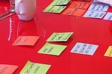
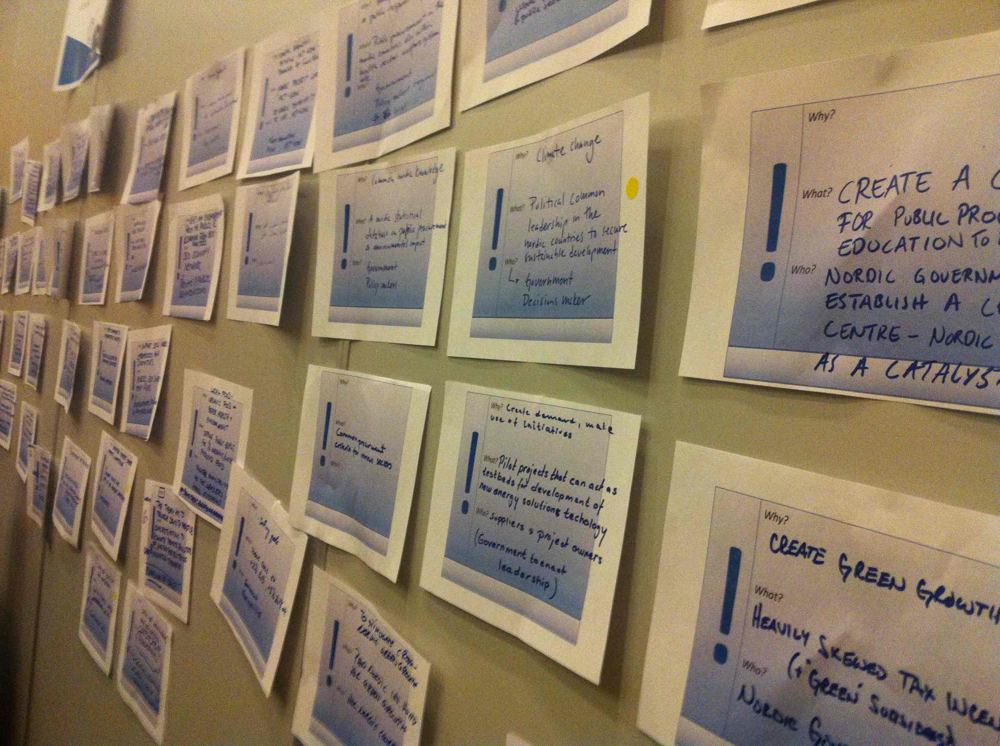
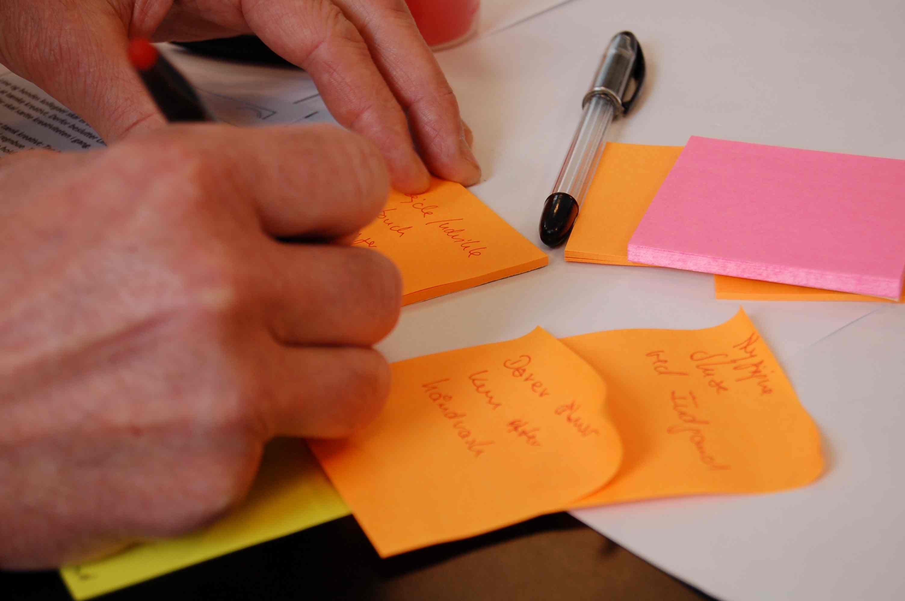

INNOBA ApS
- innovation i praksis
Kontakt:
Rikke Bastholm Clausen
Mob. : +45 31 31 87 76
Adresse:
INNOBA ApS
Symbion Science Park
Fruebjergvej 3, boks 329
2100 København Ø
Danmark
Nyheder:
Ny analyse: de innovationsaktive
INNOBA ApS - CVR No. 35 23 10 21
INNOBA er en innovationsvirksomhed. Vi hjælper offentlige og private virksomheder med at planlægge, udvikle og gennemføre innovationsprojekter. Firmaet er specialiseret i brugercentrerede innovationsprocesser fra den første idéudvikling til implementering af nye eller forbedrede services, produkter og processer. Se mere om os, hvilke ydelser vi tilbyder, samt hvilke metoder vi arbejder med her på hjemmesiden – eller kontakt os for en uforpligtende snak på:
innoba@innoba.dk eller +45 31318776.
Hvis du vil have hjælp til:
Brugerindvolvering og facilitering
- Hvordan kan vi få mere glæde af alle vores medarbejders viden, når vi udvikler nye services og produkter?
- Hvordan kan vi løfte vores forretning og organisation ved at inddrage kunder/brugere på nye måder?
- Hvad vil mine kunder have i fremtiden? Hvordan udvikler vi det næste relevante produkt?
- Hvorfor bruger kunder/brugere/borgere ikke mine ydelser p.t.?
- Jeg vil gerne have hjælp til at facilitere idé- og konceptudvikling, der giver konkrete brugbare resultater.
Strategi og innovation
- Hvordan kan man arbejde på forskellige måder med innovation?
- Hvordan arbejder man strategisk med innovation?
- Hvordan udvider jeg mine produkter med serviceydelser?
- Hvordan kan vi nytænke vores forretningsudvikling, så vi i højere grad rammer markedet og vores kunders fremtidige behov?
- Hvordan får vi mere systematisk samlet op på vores idéer internt?
Innovationsprojekter
- Hvordan designer jeg et innovationsprojekt?
- Hvordan skaber jeg fremdrift og sikrer innovationshøjde?
- Hvad er de typiske faldgrupper?
- Jeg vil gerne have hjælp til projektledelse.
- Hvordan skaffer jeg penge til et innovationsprojekt?
Offentlig-private innovationssamarbejder
- Hvad er OPI, og hvordan kan vi arbejde med det her hos os?
- Hvordan kan vi i vores offentlige organisation få et samarbejde om innovation op at stå med private virksomheder?
- Jeg mangler hjælp til at få hold på en idé til et innovationsprojekt – og få beskrevet og designet, hvilke faser sådan et projekt kunne planlægges i.
- så kontakt INNOBA
Vi vil meget gerne komme ud og give et par timers gratis sparring. Det lærer vi også noget af!
INNOBA er et moderne netværksfirma. Vi arbejder sammen med en række samarbejdspartnere og hiver ekstra medarbejdere og/eller eksperter ind alt efter opgaven. Det gør os meget fleksible og hjælper os til at give vores kunder en god service inden for alle aspekter af innovation – uanset om det er små eller store opgaver.
Vi har løbende samarbejder med advokater, designere, IT-folk mv., som er vandt til at arbejde med innovation og forstår de særlige udfordringer og krav, det medfører. Hvis vores kunder har brug for hjælp på andre områder inden for innovation, end dem vi løser, så hjælper vi meget gerne med kontakten til de bedste på feltet – eller tager dem med som del af projektteamet.
Innovation er et tværfagligt felt, som kræver ekspertise på en lang række områder. Tilgang, metoder og kompetencer skal udvælges til den konkrete udfordring – ikke omvendt.
Vores fokus er på de praktiske løsninger, som kan bruges i hverdagen – snarere end på særligt udvalgte innovationstilgange. Vi sammensætter vores værktøjskasse fra discipliner som servicedesign, design thinking, brugercentreret innovation, medarbejderdreven innovation, antropologisk/etnografiske metoder og strategisk forretningsudvikling.
Samtidig hjælper vi ofte vores kunder med at få et overblik over de mange forskellige innovationsmetoder og lærer gerne fra os, så kompetencen til at arbejde med innovation bliver, når vi går…
Vores ydelser gælder hele spektret omkring innovationsprojekter. Fra fundraising, business cases og den første idé-udvikling til udvikling af helt nye eller markant forbedrede produkter og services. Vi arbejder både på det konkrete og det strategiske niveau og hjælper også vores kunder med innovationsstrategi og processer til innovation på tværs af organisationen. På det strategiske niveau har vi både kompetencer inden for strategi- og policyudvikling i offentlige organisationer (offentlige og halvoffentlige kunder) og kompetencer inden for virksomhedsstrategi og forretningsudvikling (private kunder).
Vi har et særligt fokus på innovationsprojekter, der går på tværs af den offentlige og private sektor. Det gælder offentlig-private innovationsprojekter (OPI) men også projekter i enten den private eller offentlige sektor, der kræver en god forståelse for samspil og modspil i de to sektorer.
Brugerindvolvering og facilitering
- Brugerresearch (etnografisk research, design research, strategisk brugerresearch)
- Idé-generering
- Co-Creation (samudvikling med brugere og/eller medarbejdere)
- Konceptudvikling
- Brugercentrerede prototyper
- Workshop-facilitering
- Brugertests
- etc.
Strategisk innovation
- Innovationsforløb i virksomheder - se produktark
- Innovationsstrategi og opbygning af virksomhederne
- Service design
- Udvilking af business cases
- Strategisk idé-udvikling
- etc.
Ledelse af innovationsprojekter
- Projektdesign
- Projektledelse af hele – eller dele af - innovationsprojekter
- Planlægning og teamledelse
- Sikre fremdrift og det løbende samarbejde
- Projekt-eksekvering i alle faser
- Identifikation af konsortiepartnere
- Fund Raising
- etc.
Innovationsrådgivning
- Offentlige-privat innovationssamarbejde (OPI)
- Innovationsmetoder
- Innovationsstrategi
- Metoder til brugerinvolvering
- Projektdesign for innovationsprojekter
- Design Thinking
- Servicedesign og serviceinnovation
- etc.
Eksempler på kunder:
Munin Spot Technology, Eglu, Caretag, Cowi, Nordisk Ministerråd, Innovationsnetværk Livsstil – Bolig og Beklædning, Aalborg Universitetshospital, Københavns Kommune, Center for Sundhedsinnovation, Region Hovedstaden, Danish Design Association, Service Platform, Rigshospitalet og DI-ITEK.
Vi sammensætter vores værktøjskasse fra discipliner som servicedesign, design thinking, brugercentreret innovation, medarbejderdreven innovation, antropologisk/etnografiske metoder og strategisk forretningsudvikling.
Her er nogle eksempler på metoder, vi ofte bruger, i forskellige faser af innovationsprojekter. Download INNOBAs metodekort her

Manto
INNOBA har indgået et strategisk partnerskab med konsulentvirksomheden Manto. Manto er eksperter i oplevelsesøkonomi og forretningsudvikling af virksomheder eller organisationer, som arbejder inden for underholdnings-/oplevelsesindustrien. INNOBA og Manto har allerede samarbejdet på flere projekter, og vi ser frem til flere spændende muligheder, hvor innovation, forretningsudvikling, servicedesign og oplevelser kan gå hånd i hånd.
Domsten.dk
INNOBA samarbejder med virksomheden Domsten.dk om at tilbyde virksomheder innovationsrådgivning og intensive innovationsforløb. Domsten.dk er særdelse stærk på områderne teknologiudvikling og topledelse. I en kombination med INNOBAs innovationskompetencer mener vi at have et meget stærkt udgangspunkt for at hjælpe specielt virksomheder med teknologiafhængige/teknologitunge produkter med produktudvikling og innovation.
Links: pressemeddelelse og produktark
Rønne & Lundgren
INNOBA samarbejder løbende med advokatfirmaet Rønne & Lundgren, der bl.a. er specialiseret i rådgivning om de juridiske aspekter ved OPI-projekter. Advokatfirmaet har i samarbejde med Statsadvokaten udarbejdet standardaftaler for OPI-projekter. Læs mere her
Rønne & Lundgren har ca. 100 ansatte og er et af Danmarks førende advokatfirmaer. De har stor ekspertise og mangeårig erfaring inden for rådgivning af internationale koncerner og børsnoterede virksomheder, små og mellemstore virksomheder, offentlige myndigheder, organisationer og andre relevante aktører om alle arbejds- og ansættelsesretlige forhold.
Der er en række klassiske juridiske overvejelser, der skal gøres, når offentlige og private indgår samarbejder om innovation. Det drejer sig oftest om udbudsregler, inhabilitet, statsstøtteregler og IPR. INNOBA har dybdegående kendskab til de typiske opmærksomhedspunkter men henviser til egentlig juridisk bistand for den videre rådgivning, kontraktudarbejdelse, mv.
27. april 2015
Ny analyse: de innovationsaktive
Hvem er de innovationsaktive i den offentlige sektor? Det spørgsmål har INNOBA besvaret i en stor analyse for Center for Offentlige Innovation (COI). Det har aldrig tidligere været afdækket (hverken i Danmark eller i andre lande), hvem det egentlig er, der arbejder med innovation i offentlige sektorer – og hvordan. Der er altså tale om helt ny viden med gennemgang af 7 arketyper, som hver især spiller forskellige roller i offentlige innovation.
INNOBA fik til opgave at afdække det offentlige innovationslandskab for bl.a. at hjælpe COI med at vurdere, hvorvidt og hvordan man kan understøtte bedre spredning af de gode idéer og løsninger på tværs af den offentlige sektor ved hjælp af en ny online videndelingsplatform. Analysen har givet helt ny viden om, hvem der innoverer i den offentlige sektor, hvad der motiverer dem, hvilke barrierer de møder, og hvad der skal til for at skabe mere samarbejde og videnudveksling om værdiskabende løsninger på velfærdsudfordringer.
Se mere info og læs rapporter og analys her.
23. april 2015
Ventet og velkommen med ny app
Vi har hjulpet Øre-Næse-Halsafdelingen på Nordsjællands Hospital med et innovationsforløb for at finde nye løsninger på at nedbringe, forbedre og udnytte ventetid for patienter og pårørende på afdelingen. Det handler om det samlede møde med afdelingen, om at give tiden tilbage til patienterne, om forventningsafstemning og information, om at tænke tid mellem konsultationer ind i selve behandlingsforløbet – og om at se med nye øjne på arbejdsgange og mødet med den enkelte patient/pårørende. En af de mange idéer, der kom ud af forløbet, var at udvikle en app, der kan understøtte en bedre venteoplevelse. Vi er meget stolte og glade for at være blevet inviteret til at hjælpe med udviklingen af den nye app sammen med virksomheden Viscom, der er specialiseret i udvikling og design af sundhedsapps.
Ny praktikant
INNOBA har fået ny praktikant. Lisbeth Wamsler Jensen er digital designer med både en baggrund fra IT-universitetet og som grafisk designer. Hun skal hjælpe med grafisk materiale, til workshops og med hjemmesidedesign. Vi glæder os til samarbejdet!
10. marts 2015
Skalering af innovation gennem IT
Mange har fundet vejen til at udvikle og implementere nytænkning og nye løsninger i enkeltstående projekter. Fremtidens innovationsudfordring bliver at skalere innovationsprocesser og gøre innovation til en integreret del af hverdagen.
Hvordan arbejder du effektivt med idé‐opsamling i din organisation? Hvordan får man løbende tilgang til systematisk viden om, hvordan andre løser hverdagens velfærdsudfordringer? Hvad kan der gøres for at understøtte løbende borgerinddragelse på nye måder?
Vi afholder sammen med IT‐virksomheden Induct gå‐hjem‐møde i Dansk IT på torsdag og prøver at give svarene!
Kom forbi og hør om de nyeste IT‐værktøjer til understøttelse af innovation. Vi vil bl.a. præsentere eksempler på, hvordan danske og udenlandske offentlige organisationer har implementeret IT‐løsninger til borgerinddragelse, CO‐Creation med medarbejdere, systematisk idé‐opsamling og videndeling om innovation.
Se info om tid og sted her
10. januar 2015
Ny landsdækkende portal for videndeling om innovation
Vi er glade for at kunne fortælle, at vi sammen med IT-virksomheden Induct har fået til opgave at hjælpe Center for Offentlig Innovation (COI) med at undersøge, hvordan man online kan understøtte videndeling om innovation på tværs af den offentlige sektor i Danmark. Der sker så meget i regioner, kommuner og i staten på innovationsområdet, men det er stadig begrænset, hvor meget man bruger hinanden på tværs af sektorer til at få idéer og finde nye veje til at løfte fremtidens udfordringer. Samtidig er det svært at få et overblik over, hvor man skal gå hen for at høre om de andres erfaringer – og måske finde den historie der gør, at man ikke behøver at opfinde den dybe tallerken, fordi nabokommunen allerede har brugt et år på at udvikle en super smart løsning på netop det problem, man selv tumler med.
INNOBA vil den næste måned lave en større brugerundersøgelse i form af interviews, observationer, afdækning af typiske brugerrejser for innovation, CO-Creation mv. Undersøgelsen skal klæde COI på til at beslutte, om der skal etableres en landsdækkende onlineplatform for videndeling om innovation – og i så fald, hvad den skal indeholde.
Hvis platformen etableres vil den blive udviklet af Induct. INNOBA vil i så fald stå for brugertests og sikring af, at viden fra brugerundersøgelsen i form af en brugerkravsspec. kommer i spil.
Vi glæder os til opgaven og til at tale med rigtig mange spændende innovationsinteresserede på tværs af hele den offentlige sektor!
Se mere om projektet her.
Kan ventetid på hospitaler forbedres med servicedesign?
Hvordan kan ventetid reduceres – eller måske helt fjernes? Hvordan kan oplevelsen af at vente forbedres? Kan ventetid være noget positivt?
Øre-næse-halsafdelingen på Nordsjællands Hospital har besluttet at udvikle nye løsninger til at forbedre venteoplevelsen for afdelingens mange patienter. INNOBA hjælper afdelingen med at afdække behov og brugeroplevelser blandt patienter og personale og at omdanne den viden til konkrete nye løsninger. Vi gennemfører et servicedesignprojekt de kommende måneder, hvor klinisk personale og øvrige medarbejdere med inddragelse af patienter og pårørende udvikler idéer til nye arbejdsgange, produkter, fysiske rammer, IT-baserede løsninger eller services, der kan reducere, forbedre eller re-definere ventetid. Som del af projektet afdækkes eksisterende erfaringer og løsninger på ventetid, og afdelingen udvælger 3 koncepter, man kan teste af i hurtige prototype-tests – og måske på sigt implementere.
Projektets erfaringer skal bruges i det øvrige Nordsjællands Hospital, i det nye bygger af superhospital – og som input til andre igangværende aktiviteter på hospitaler for at finde fremtidens gode vente-løsning.
Fremtidens patientværelse: Vi bygger live size prototyper på Hvidovre Hospital
Vi er en del af rådgivergruppen på Nyt Hospital Hvidovre og har stået for brugerinvolvering i det nye byggeri i samarbejde med de ansvarlige arkitekter. Vi er lige blevet færdige med at teste prototyper på patientværelser, vagtværelser og undersøgelsesbehandlingsrum sammen med det kliniske personale, portører, sekretærer, sikkerhedsrepræsentanter, hygiejnesygeplejersker, patienter og øvrige brugertyper.
På baggrund af en fælles brainstorm på behov og ønsker til de fremtidige rum i det nye byggeri, er der bygget mockups i fuld størrelse i hospitalets kælder. Brugerne har nu været på besøg, har flyttet rundt på senge, borde, stole, diskuteret indretning, overejet pladshensyn i forhold til arbejdsgange, diskuteret patienters og pårørende behov og meget mere.
Se billeder fra mockups og høre mere her
Arkitekterne er i gang med at samle op på alle de mange brugerinputs fra hele brugerprocessen – fra afdelinger, emnegrupper, tværgående funktioner, etc. Snart ligger de første tegninger klar på, præcis hvordan det fremtidige byggeri skal indrettes.
3. december 2014
Velkommen til Camilla og Jane
Vi er glade for at byde velkommen til Camilla Hoff-Jørgensen og Jane Mejdahl, som er blevet fast tilknyttede INNOBA som antropologer. Jane Mejdahl, cand.scient.anth., har 8 års erfaring med planlægning og gennemførelse af innovations- og udviklingsprojekter i både offentligt og privat regi. Hun har stor erfaring med etnografiske metoder, herunder deltagerobservation og kvalititative interviews, men også med facilitering af workshops og online research. Endvidere har hun undervist i metoder og servicedesign på både ITU og DTU.
Camilla Hoff-Jørgensen er socialantropolog og specialist i kvalitative undersøgelser. Hun har erfaring med at gennemføre borgerinddragende researchprocesser gennem innovative interviewforløb og er iderig i forhold til at rekruttere brugere og få dem til at bidrage med deres viden i diverse aktiviteter bl.a ved hjælp af visuel dokumentation og mapping. Camilla har erfaring med research og brugerinddragelsesprocesser fx i socialt udsatte boligområder, blandt medarbejdere i fødevarevirksomheder samt analyse af danske, japanske og spanske familiers holdninger til sundhed og fødevare
Serviceinnovation i ATP
”Hvordan skaber vi den bedst mulige oplevelse for borgerne, når de møder ATP?”
INNOBA er blevet inviteret af ATP til at bidrage til udvikling kvalificering af ideer til hvordan borgerne kan opleve den bedste service, når de skal høre nyt om deres pension, ansøger om boligstøtte, stiller spørgsmål om familieydelser, mv. Vi har i samarbejde med ATP designet og gennemført et internt CO-Creation forløb, hvor ledere og medarbejdere på tværs af organisationen har arbejdet med et at udvikle og kvalificere et idé-katalog med konkrete idéer til forbedringstiltag på en række fagområder. Indsigterne omdannes til en 4-årig investeringsplan og et prioriteret idé-dokument, som skal lægge til grund for bestyrelsens strategiske overvejelser omkring de kommende års forretningsudvikling ift. endnu bedre brugeroplevelser.
OPI i Københavns Kommune
Vi havde i november en spændende dag med Socialforvaltningen (SOF) i Københavns Kommune. I samarbejde med Enheden for Velfærdsteknologi og advokatfirmaet Rønne & Lundgren gennemgik vi over en dag, hvilke udfordringer og potentialer i offentlig-private innovationssamarbejder (OPI), forvaltningen skal have fokus på - på tværs af organisationen. Vi diskuterede væsentlige juridiske problemstillinger, overvejelser om innovationsledelse og brugerinvolvering, tilgange til samarbejde med virksomheder og brug af fælles udviklingsmål til forventningsafstemning og styring af OPI-processer. Samtidig gav dagen mulighed for at styrke samarbejdet på tværs af afdelinger og en endnu bedre brug af hinanden fremadrettet i arbejdet med OPI.
Evaluering af stort udviklingsprojekt
Vi er i gang med at foretage en ekstern evaluering af det spændende udviklingsprojekt Da Danmark blev til - fra vikingekonger til valdemarer (DDBT). Projektet er et 4-årigt kulturhistorisk oplevelsesprojekt (2011-2014) med fokus på vikingetid og middelalder, i regi af Kulturregion Midt- og Vestsjælland. I samarbejde med Østdansk Turisme har projektet haft fokus på at øge kendskab til Region Sjællands, og i særdeleshed til Kulturregion Midt- og Vestsjællands, unikke historie - lokalt, nationalt og internationalt, og gøre området til det førende sted for oplevelser af vikingetid og middelalder.
Den første projektperiode er nu ved at være afsluttet, og projektledelsen har ønsket at samle op på, hvad der har fungeret godt, og hvad der med fordel kan tænkes anderledes i en evt. videreførelse af projektet. Vi er super glade for at have fået opgaven med at udarbejde en lærende evaluering, som kan bruges til afrapportering på projektet og, fremadrettet, til den bedst mulige projektudvikling!
1. oktober 2014
Hvordan udvikler man nye oplevelser, der tiltrækker de rigtige kunder?
Vi har været i Jylland sammen med vores samarbejdspartner Manto for at hjælpe oplevelsesvirksomheder (museer, biografer, musikorkestre, kulturinstitutioner,...) med at nytænke deres serviceydelser. På en intensiv dag arbejdede de passionerede deltagere med 3 nye værktøjer, der kan udfordre vanetænkningen, inddrage brugernes perspektiv og på en effektiv måde lede til ny udvikling. Hver deltager gik derfra med konkrete nye, implementerbare idéer til oplevelser, services, produkter, koncepter, der kan tiltrække nye besøgende og styrke den overordnede forretning.
Velkommen til Susanne og Line
INNOBA er super glad for at kunne byde velkommen til to fast tilknyttede profiler: Line Sigaard Kjær, cand.it. og designer, har tidligere arbejdet for INNOBA under hendes studier på IT- Universitetet. Vi er glade for at have hende tilbage på projekterne og at kunne bruge hendes kompetencer inden for visuelle virkemidler, brugerdreven innovation og ideation.
Susanne Abildgaard Rud er antropolog (cand.scient.anth og socialantropolog) og har omfattende erfaring med at gennemføre inddragende og innovative udviklingsforløb, der kan igangsætte forandringer og lede til nye og fremtidsorienterede løsninger. Hun er super stærk på brugerinddragelse og brugerforståelse – og på at omdanne brugerindsigter til nytænkning af produkter og services. Susanne har en lang erfaring med at løse opgaver af brancher, herunder sundhedssektoren, kulturområdet, IT og miljø.
Vi flytter
Vi flytter til Symbion Science Park. Symbion er et stort kontor- og netværksfælleskab for omkring 250 virksomheder fordelt på Østerbro og Ørestaden. Alle virksomheder har fokus på innovation og forretningsudvikling. Vi glæder os til at blive en del af et dynamisk og inspirerende miljø.
1. september 2014
OPI kursus
Så er der OPI kursus igen. Kom til 2 dages intensiv gennemgang af metoder, faldgruber og muligheder i offentlig-privat samarbejde om innovation.
Se mere her
23. august 2014
Årets konference om serviceinnovation
Kom og vær med, når Serviceplatform afholder ”Serviceinnovation-konferencen 2014” d. 27. august! Der vil være oplæg med konkrete erfaringer fra innovative virksomheder i dansk erhvervsliv, dialog med førende eksperter inden for innovative serviceløsninger og videndeling fra forskere, der finder nye veje til åben innovation. Over 200 innovationsinteresserede har allerede meldt sig til. Rikke Bastholm fra INNOBA er dagens vært og vil lede deltagerne igennem en spændende dag med masser af brugbar viden og inspiration.
Se program og meld dig til her.
12. juni 2014
Ny samarbejdspartner
Vi er glade for at fortælle, at INNOBA har indgået et strategisk partnerskab med konsulentvirksomheden Manto. Manto er eksperter i oplevelsesøkonomi og forretningsudvikling af virksomheder eller organisationer, som arbejder inden for underholdnings-/oplevelsesindustrien. INNOBA og Manto har allerede samarbejdet på flere projekter, og vi ser frem til flere spændende muligheder, hvor innovation, forretningsudvikling, servicedesign og oplevelser kan gå hånd i hånd.
P.t. hjælper vi Manto med at gennemføre en evaluering af organisationen Interactive Denmarks arbejde med at udvikle og støtte spilindustrien i Danmark.
Læs mere om projektet og om Manto her
12. juni 2014
HAT-projekt i TV-avisen
Så er der nyhedsindslag om projektet Healtchcare Asset Tracking, som vi tidligere har omtalt her på siden. Se mere på http://hat-projekt.dk/2014/06/hat-projektet-i-tv-avisen/
12. maj 2014
HAT afslutningsseminar - kom og hør resultatet af logistikprojekt på hospitaler!
INNOBA har hen over det sidste 1 1/2 år deltaget i et innovationssamarbejde mellem sundhedsaktører og private virksomheder om test og udvikling af en ny teknologisk løsning til sporing af varer på hospitaler. Studier viser, at op mod 46% af hospitalers ressourcer bruges på logistik. Nogle varer er desuden meget omkostningstunge - en enkelt kasse med medicin kan f.eks. have en værdi på mere end en halv mio. DKK. Så der er mange penge at spare ved mere effektiv logistik og sporing af forsvundne varer.
Projektet Healthcare Asset Tracking (HAT) er et samarbejde mellem Herlev Hospital, Aalborg Universitetshospital, Region Hovedstaden Apotek, Regionslageret i Region Hovedstaden, Center for Regional Udvikling og Idéklinikken samt virksomhederne Munin Spot Technology, InformiGIS, Alectia, INNOBA og Insero.
Vi i INNOBA har stået for udvikling af projektdesignet, projektledelse af projektet og - i samarbejde med Idéklinikken - brugerinvolvering og brugertests på Aalborg Universitetshospital.
D. 28. maj afholdes et 2-timers seminar om HAT-projektet og dets resultater. Det er et åbent seminar med adgang for alle med interesse for OPI-projekter, hospitalslogistik og sporbarhed samt brugercentreret produktudvikling. Kom og hør om, hvad offentlige og private parter kan få ud af at arbejde sammen om innovation og fremtidens velfærdsløsninger.
Tilmelding sker ved mail til chjo@insero.dk.
>>>>>>> e33f4b077ea43a748a133b7ffc593ad96b499cc7
2. april 2014
Oplev vækst ved servicedesign
Kan man designe nye oplevelser og forbedre sin forretning ved at inddrage brugerne? Hvordan tænker man innovation ind i udviklingen af kulturtilbud? Hvilke værktøjer kan man hurtigt tage i brug for at finde de ydelser, der skal tiltrække fremtidens besøgende til biografer, museer, events – og hvad gør man, når man bare gerne vil leve af sin musik?
Det var nogle af de spørgsmål INNOBA arbejdede sammen med 50 aktører fra de kreative erhverv om at besvare en formiddag i sidste uge. INNOBA var inviteret af Manto, som står for projektet ”Oplev vækst” i Nordjylland, til at stå for en ambitiøs formiddag med fokus på innovation og serviceudvikling. Projektet hjælper forskellige typer af oplevelsesinstitutioner og kreative talenter med forretningsudvikling og kreativ vækst over en række workshops, sparring og opfølgning.
Vi introducerede 4 konkrete værktøjer til udvikling og forbedring af fremtidens oplevelser: CO-Creation, Brugerrejser, Rapid Prototyping og Cultural Probes. Vi havde en fantastisk dag med super entusiastiske deltagere, som både gik hjem med nye værktøjer og konkrete idéer til nye services, der kan testes af.
9. marts 2014
Workshop og oplæg om CO-Creation på Dansk IT konference
INNOBA er inviteret til at holde oplæg om CO-Creation på Dansk IT's konference om offentlig digitalisering d. 19.-20. marts, 2014 i Aarhus. Oplæg'et er kl. 12.00 d. 19. - og senere på dagen afholder vi også workshop:
I arbejdet med innovation af serviceydelser bliver IT-løsninger og digitalisering i stigende grad et afgørende element. Derfor er INNOBA gået sammen med IT ekspert Rune Domsten fra Domsten.dk om at sætte spot på, hvordan innovation, borgerinddragelse og digitalisering kan spille sammen. Vi afholder en workshop om digital borgerinddragelse og CO-Creation som en spændende ny vej til serviceudvikling i den offentlige sektor.
Se program for hele konferencen her: http://dit.dk/events/2014/03/19-offentlig-digitalisering-2014.aspx
Få mere info om workshoppen her: http://dit.dk/events/2014/03/19-offentlig-digitalisering-2014/Program.aspx
8. januar 2014
Bedre sundhed med Design Thinking
Vi holder oplæg om "Design Thinking for Better Healthcare" på Design is Business konferencen i Bella Centeret. Konferencen er en del af DesignTrade, som er Nordens nye innovative designmesse. Der vil være deltagere fra ind- og udland og en masse inspiration. Kom og vær med!
Vi fortæller om Healthcare Asset Tracking projektet og brugen af Design Thinking til bedre sundhedsløsninger kl. 13 i morgen (9. januar). Derudover vil der være masser af oplæg om design, forretning og innovation.
Links:
Om messen:
Presse:
http://www.danishdesignassociation.com/presse/nyheder/staerkt-program-paa-ddas-aabne-konference.aspx
28. oktober 2013
INNOBA med i byggeri af Nyt Hvidovre Hospital
Vi er rigtig glade og stolte af at kunne fortælle, at INNOBA er blevet udvalgt til at stå for brugerinddragelse på Hvidovre Hospital, når hospitalet skal udvides med et helt nyt byggeri over de kommende år.
Aarhus arkitekterne og schmidt hammer lassen architects har sammen med den øvrige rådgivergruppe Søren Jensen Rågivende Ingeniørfirma, Kragh & Berglund og Royal Haskoning DHV vundet opgaven med at tegne det nye hospital. Deres projektforslag skal i løbet af 2014 og 2015 færdiggøres til de endelige tegninger for de overordnede fysiske rammer og alle detaljer i bygningen. I den proces skal medarbejdere på tværs af alle medarbejdergrupper samt patienter og pårørende inddrages i at give deres bud på, hvad bygningen skal kunne for at blive det bedst mulige Nyt Hvidovre Hospital.
INNOBA bliver ansvarlig for at facilitere alle brugermøder og give rådgivning og sparring om, hvordan brugerprocessen kan gennemføres, så alle føler sig hørt og inddraget, der sikres en ambitiøs innovationshøjde og idé-udvikling, og de konkrete brugerinputs bliver direkte anvendelige. Vi glæder os til opgaven!
Se pressemeddelelse her og omtale hos DDA her
28. oktober 2013
Vi udbyder kurser i OPI projektledelse
Projektledelse af innovationsprojekter på tværs af offentlige og private aktører (OPI-projekter) kræver typisk andre kompetencer og værktøjer end ledelse af andre typer af projekter. Mange, der bliver involveret i innovationsprojekter, oplever at de traditionelle værktøjer, der fungerer godt til planlægning og ledelse af driftprojekter kommer til kort, når man skal til at beskæftige sig med processer og arbejdsopgaver, der konstant ændrer karakter. På samme måde er innovation et fagområde, der kræver specifikke metoder og kompetencer – og med en masse velafprøvede værktøjer, som er værd at kende.
Endelig er der en række juridiske faldgrupper ved netop udviklingssamarbejder mellem offentlige og private aktører, man skal være meget opmærksom på, inden man giver sig i kast med OPI. Derfor er INNOBA gået sammen med advokatfirmaet Rønne & Lundgreen om at udbyde et kursus i OPI projektledelse. Kurset udbydes via DJØF og gennemføres første gang i marts 2013.
Se mere om kurset her
Måske ses vi til marts?!
22. oktober 2013
Servicedesign for Skagen turisme
INNOBA har sammen med virksomheden Manto og Tegnestuen LBB3 vundet en opgave for Visit Nordjylland om udvikling af en potentialeplan for Skagen som international kystferieby. Manto er som eksperter i oplevelsesøkonomi hovedansvarlig for opgaven, som starter op til december. INNOBA skal facilitere forløb med centrale aktører fra turisterhvervet, detailhandlen, erhverv, foren¬ingsliv og lokale ildsjæle om nye turismetilbud, der kan tiltrække flere internationale turister til Skagen. Vi inddrager viden om trends og internationale turisters interesseområder i et idé-udviklingsforløb. Her bruger vi visualisering og værktøjer fra servicedesign til at udvikle og bygge konkrete prototyper på nye oplevelsestilbud. Vi arbejder også med forskellige forretningsmodeller for international turisme i Skagen. Vi glæder os til at bidrage til den videre udvikling af turisme i Skagen!
22. oktober 2013
Growbiz kick-off workshop
Vi havde en rigtig spændende dag på Dragør Ford før efterårsferien med folkene bag Growbiz. INNOBA var inviteret til at stå for en dags kick-off på det næste års aktiviteter blandt partnerne i Growbiz. Væksthus Hovedstadsregionen, Serviceplatform, Dansk Erhverv, IT-branchen og Medicon Valley Alliance arbejdede med målgrupper, planer for markedsføring, tidsplan og brainstorm på aktiviteter og fik lagt en plan for de næste måneders samarbejde. Vi glæder os til at være med til at følge op på dagen og bidrage i det videre forløb.
Growbiz er et internationaliseringsforløb for små virksomheder i videnservice-erhvervet. Virksomhederne deltager i et forberedende forløb, hvor de får værktøjer til forretningsudvikling og internationalisering. Derefter arrangeres en udlandsrejse til et relevant eksportmarked, hvor der er booket møder med potentielle kunder og samarbejdspartnere. Forløbet har været afholdt med stor succes 2 gange tidligere og gennemføres nu med en række nye virksomheder.
08. oktober 2013
Slip sundheden fri
Vi har været i Herning og hjælpe styregruppen for projektet Slip sundheden fri med at udarbejde en strategi for konsortiedannelse og igangsættelse af fælles aktiviteter. Slip sundheden fri er et projekt på tværs af Herning og Holstebro kommuner, Hospitalsenheden Vest og lægepraksis. Projektet skal undersøge, hvordan man kunne agere i patientforløb, hvis man ikke var forskellige forvaltninger og institutioner – men i stedet skulle agere som én samlet organisation. Det handler om det nære sundhedsvæsen og borgeren/patienten i centrum.
INNOBA var inviteret til at facilitere en halv dag med den samlede styregruppe med fokus på konsortiedannelse og planer for konkrete aktiviteter. Vi stod for med oplæg om forskellige konsortietyper, øvelser og diskussioner at sørge for et konkret output i form af vision, mål, succeskriterier, aktiviteter og organisering for det fremtidige samarbejde. En super sjov og produktiv dag med masser af nye indsigter!
Se mere om det meget visionære projekt her og her
22. august 2013
Ny medarbejder hos INNOBA
INNOBA byder velkommen til Line Sigaard Kjær, som vil være hos INNOBA hele efteråret frem til jul. Line læser digital design og kommunikation på IT- Universitetet og vil sideløbende med sin ansættelse I INNOBA skrive speciale om brugerdreven innovation indenfor sundhedssektoren.
Line har stor teknisk og sociologisk viden om, hvordan man tænker tekniske muligheder sammen med brugernes behov indenfor innovation. Derudover har hun en baggrund indenfor grafisk design og ideation.
I INNOBA kommer Line til at bidrage til workshopfacilitering, brugerinvolvering, konceptudvikling og design.
16. august 2013
INNOBA i DI
Vi er blevet medlem af Dansk Industri. Læs mere om DI her.
9. august 2013
Vi underviser i co-creation
INNOBA er blevet inviteret til at deltage som underviser og facilitator i Business Booster. DDA og Manto udbyder sammen et udviklingsforløb for designvirksomheder med fokus på forretningsudvikling. Der afholdes i alt 8 heldagsworkshops med forskellige temaer. INNOBA står for workshoppen om co-creation d. 20. august.
Kursusdagen vil indeholde oplæg om potentiale og muligheder ved co-creation, case-eksempler, øvelser samt inputs om konkrete værktøjer.
Vi glæder os til at videndele om vores erfaringer med co-creation!
Se mere om kurset her.
3. juli 2013
Behov for sporing af varer på hospitaler
INNOBA fungerer som overordnet projektleder samt ansvarlig for brugerinddragelse i Aalborg på projektet Healthcare Asset Tracking, HAT. HAT-projektet har til formål at teste en software- og hardwarebaseret sporingsløsning på 2 hospitaler: Herlev Sygehus og Aalborg Universitetshospital. Projektet tager udgangspunkt i brugerbehov og arbejdsgangsanalyser for at teste og tilpasse en skræddersyet sygehusløsning.
Første fase af projektet er nu afsluttet, og vi er færdig med at afdække arbejdsgange og brugerbehov på 3 vareområder på Aalborg Universitetshospital. Sammen med Idé-klinikken har vi gennemført ca. 30 interviews og en række observationer for at se, hvordan kørestole, blodposer og celle-vævs-prøver bevæger sig rundt på hospitalet. På den baggrund er der nu samlet op på, hvilke behov forskellige typer af brugergrupper har for elektronisk sporing af de tre produkttyper. Virksomheden Munin Spot Technology skal nu sætte udstyr op rundt omkring på hospitalet, så vi kan pilotteste, hvordan en trådløs sporingsløsning kunne fungere.
INNOBA vender i efteråret tilbage til Aalborg Universitetshospital for at lave en række deltagende observationsstudier af brugernes interaktion med den elektroniske løsning samt yderligere anbefalinger til tilpasning af funktionalitet og brugerinterface.
Links: 3 rapporter om brugerbehov.
3. juli 2013
Fremtidens forskning på Kolding Designskole
Vi er nylig vendt tilbage fra en spændende heldagsworkshop i Kolding med en lang række førende forskere på design- og innovationsområdet. INNOBA var blevet bedt om at facilitere en dag, hvor Kolding Designskoles forskningsteam kunne brainstorme på, hvordan de skal arbejde strategisk med forskning de næste 2 år. Sammen med forskningschef Irene Lønne havde vi lagt et detaljeret program for dagen, hvor teamet kom igennem alle niveauer i en samlet strategi samt idé-udviklede ift indsatser og ambitioner. Selvfølgelig skulle der anvendes visuelle designværktøjer i processen. INNOBA arbejdede derfor tæt sammen med designstuderende fra Designskolen om at udvikle et sæt templater og materiale til workshoppen, som bagefter kan bruges til at dokumentere resultaterne. Materialet hænger nu på væggen uden for forskernes kontorer som et levende full size dokument, man løbende kan arbejde videre med.
3. juli 2013
Fundraising og brugerinddragelse til produkt- og softwareudvikling
INNOBA hjalp sidste år Rigshospitalet og virksomheden Caretag med at søge fondsmidler til et projekt om sporing af kirurgiske instrumenter. En sporingsløsning vil bl.a. kunne spare tid på operationsafdelinger til optælling af instrumenter før og efter en operation samt på sterilcentraler, når instrumenterne skal autoklaveres (rengøres). Projektet har nu fået 2,6 mio. kr. ud af et samlet budget på 4,5 mio. kr. til at markedsteste en løsning på 4 af landets hospitaler. Vi er blevet bedt om at varetage brugerinddragelse og brugertests til efteråret. Det glæder vi os meget til!
3. juli 2013
Markedsanalyse og feasibility studier for oplevelsesinstitution
Medarbejdere fra INNOBA bidrager på en fortrolig opgave for en oplevelsesinstitution i Danmark, der ønsker at udbygge sine aktiviteter, herunder tænke institutionens fremtid sammen med byudvikling og større fysiske rammer. Vi har set på markedssituationen, indtjeningspotentiale og forskellige strategiske tilgange til at møde brugernes og potentielle kunders behov.
3. juli 2013
Nyt samarbejde med Domsten.dk om teknologitung innovation
Vi er glade for at kunne meddele, at INNOBA har indgået et samarbejde med virksomheden Domsten.dk om at tilbyde virksomheder innovationsrådgivning og intensive innovationsforløb. Domsten.dk er særdelse stærk på områderne teknologiudvikling og topledelse. I en kombination med INNOBAs innovationskompetencer mener vi at have et meget stærkt udgangspunkt for at hjælpe specielt virksomheder med teknologiafhængige/teknologitunge produkter med produktudvikling og innovation.
Links: pressemeddelelse og produktark
25. juni 2013
INNOBA i DDA
Vi er blevet medlem af Danish Design Association. Læs mere om DDA her.
Se mere om INNOBAs medlemskab her
20. juni 2013
INNOBA holder kursus om brug af design til visuel kommunikation og innovation
12. september 2013 deltager INNOBA som gæsteoplægsholder på et kursus om visuel kommunikation og design. Kurset udbydes af Dansk Kommunikationsforening og afholdes i samarbejde med Irene Lønne fra Kolding Designskole. Vi glæder os til at dele ud af viden om, hvordan man arbejder med designere, bliver mere målrettet med visuel kommunikation, og hvordan man kan bruge designmetoder og visuel kommunikation på nye måder - bl.a. i innovationsprojekter og til produkt- og serviceudvikling.
Se om kurset er noget for dig her
17. juni 2013
Ny designer hos INNOBA
Vi byder velkommen til Stephanie Pitarch, som vil være hos os i juni måned for at hjælpe med design og workshopfacilitering. Stephanie er uddannet industriel designer og har stor erfaring med innovationsprojekter fra bl.a. tidligere ansættelse i Center for Sundhedsinnovation.
14. juni 2013
Brugercentreret softwareudvikling
INNOBA deltog på årets RFID DK konference med et oplæg om brugercentreret test og tilpasning af software. Læs mere om workflowanalyse, blueprints, design research og effektmåling på linket her. Læs også om projektet Healtchcare Asset Tracking. INNOBA varetager den faglige projektledelse af HAT-projektet, ligesom vi står for brugerinddragelse og brugertests i samarbejde med Videncenter for Innovation og Forskning, Idé-klinikken og Alectia. Projektet er et OPI projekt støttet af Fornyelsesfonden med projektpartnerne Munin Spot Technology (projektejer), Insero, InformiGIS, Herlev Hospital, Aalborg Universitetshospital, Regionslageret og Regionsapotektet i Region Hovedstaden samt Alectia, IDK og VIF.
Links: